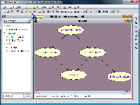
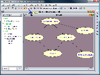
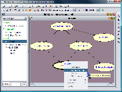
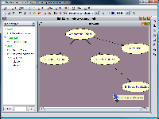
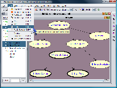
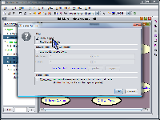
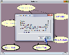
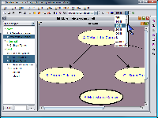

While in the edit mode, the user can modify the existing network structure. Among the options SamIam provides in the network menu is adding a new node to the existing network. Once the user initiates the addition of a variable, SamIam asks him to choose a location for the new node. At any time, the user can right click and cancel the operation. Once he chooses the location for the new node, SamIam drops a new node there with default properties. The state names for each variable must be distinct in the context of that variable, but can be the same as those of another node. The default number of states for the new node is two, but the user can insert or append an arbitrary number. Besides creating new nodes, it is also possible to delete any number of nodes at once. To select several nodes at once, hold the "Shift" key on the keyboard and select the nodes with the mouse. Then, choose the option "delete selected nodes" from the network menu. When SamIam deletes the node, all of the edges connecting the node to other nodes are deleted as well. It is also possible to delete one edge at a time. To do that, select the option "delete an edge" from the network menu, select the node where the edge begins and then, correspondingly, select the node where the edge ends. New edges can be added to the network in a similar manner with a restriction prohibiting adding edges that create cyclic networks.
For networks that do not contain any information
about the positions of the nodes, all of the nodes may appear on top of each
other. Such an appearance is rather difficult for the user since they would
then manually have to move the nodes around to see the network. To
remedy this inconvenience,
SamIam provides the
"Auto-Arrange" tool in the
Edit menu. The user enters appropriate numbers for the spacing between the
nodes and approximate network width. The nodes in the network, which are at
exactly the same position, are then rearranged automatically. In addition to
all of the options above, SamIam provides the user with an option of creating
a new network from scratch and saving it in *.net (version 5.7) format.
The user can build a network of arbitrary size using the options in the network menu
described above.
 |
 |
 |
 |
Subnetworks copy and paste are also possible in edit mode. Select a subnetwork and choose option "Copy" under the "Edit" dropdown menu. To cut a subnetwork, choose option "cut selected subnetwork," and a prompt will confirm deletion of selected nodes and edges. Select "Paste" to paste the subnetwork with edges and probabilities and specify location of new subnetwork. With "Paste", all node properties and edges are kept intact in copied subnetwork. With "Paste Special", the user is allowed to choose to paste edges and/or probabilities. These functions can also be accessed as menu buttons. Ctrl-C (copy), ctrl-X (cut), ctrl-V (paste), and ctrl-P (paste special) keyboard hotkeys are enabled for these tasks.
In case the network becomes too large for screen, the "View" menu provides zoom-in and zoom-out features. To return to default zoom setting, select "Zoom Actual Pixels (1/1)." Selecting "Zoom Fit on Screen" allows SamIam to choose best-fit zoom setting for the network on the screen. Select "Refresh" to refresh network display.
The "Network Information" feature under the "Tools" menu displays quantitative facts about the open network. Clicking it reveals the number of nodes, edges, minimum domain cardinality, and maximum domain cardinality.
 |
 |
 |
 |